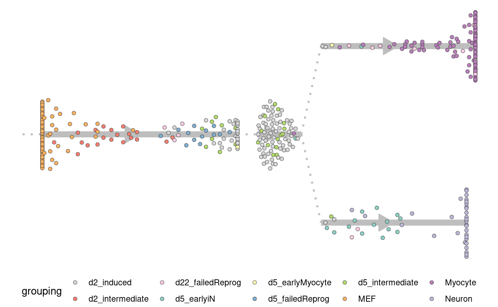
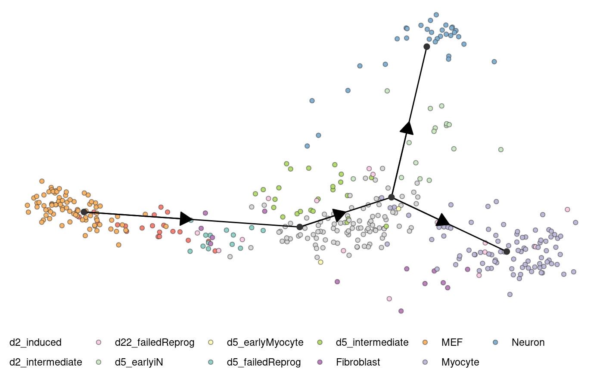
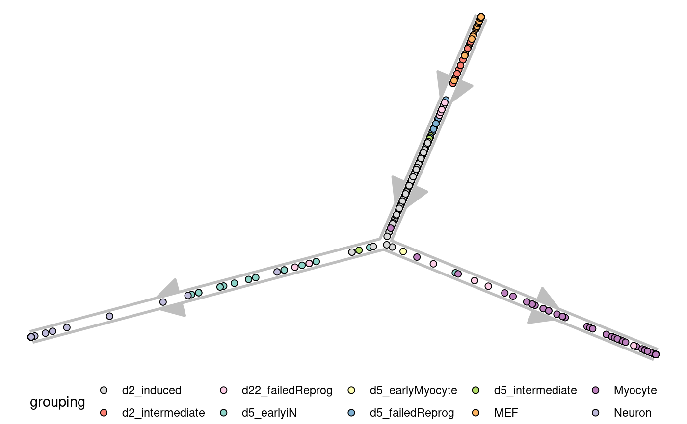
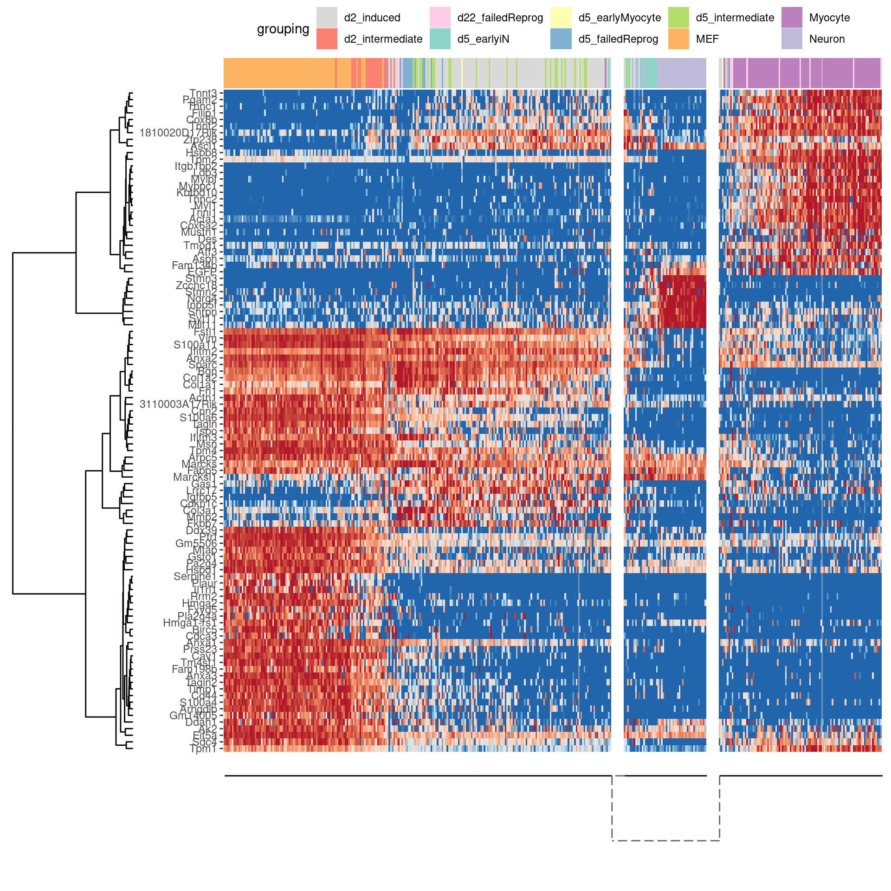

Fibroblast reprogramming (Treutlein et al.)
Source:vignettes/fibroblast-reprogramming_treutlein.Rmd
fibroblast-reprogramming_treutlein.Rmdlibrary(dyno)## Loading required package: dynfeature## Loading required package: dynguidelines## Loading required package: dynmethods## Warning: replacing previous import 'dplyr::vars' by 'ggplot2::vars' when
## loading 'dynmethods'## Loading required package: dynplot## Loading required package: dynwraplibrary(tidyverse)## ── Attaching packages ─────────────────────────────────────────────────────────────────────────────────────────────────────── tidyverse 1.2.1 ──## ✔ ggplot2 2.2.1.9000 ✔ purrr 0.2.4
## ✔ tibble 1.4.2 ✔ dplyr 0.7.4
## ✔ tidyr 0.8.0 ✔ stringr 1.3.0
## ✔ readr 1.1.1 ✔ forcats 0.3.0## ── Conflicts ────────────────────────────────────────────────────────────────────────────────────────────────────────── tidyverse_conflicts() ──
## ✖ dplyr::filter() masks stats::filter()
## ✖ dplyr::lag() masks stats::lag()
## ✖ dplyr::vars() masks ggplot2::vars()First load the dataset
data("fibroblast_reprogramming_treutlein")
task <- fibroblast_reprogramming_treutleinChoosing the best method for this task
guidelines <- guidelines(task, answers=list(multiple_disconnected="No", expect_topology="Yes", expected_topology="Bifurcating"))
methods <- guidelines$methods %>% pull(method_id) %>% first()Running the top methods
Start up the dynmethods docker
# start_dynmethods_docker()prediction <- infer_trajectory(task, "slIngsht")## Using full covariance matrixRoot the trajectory
prediction <- root_trajectory(prediction)## root cell or milestone not provided, trying first outgoing milestone_id## Using '4' as rootplot_dendro(prediction, grouping_assignment = task$grouping)## Coloring by grouping
plot_dimred(prediction, grouping_assignment = task$grouping, expression_source = task$expression)## Coloring by grouping
plot_graph(prediction, grouping_assignment = task$grouping)## Coloring by grouping
plot_heatmap(prediction, task$expression, grouping_assignment = task$grouping, features_oi = 100)## No features of interest provided, selecting the top 100 features automatically## Using dynfeature for selecting the top 100 features## Coloring by grouping
cell_feature_importances <- calculate_cell_feature_importance(prediction, task$expression)
cell_feature_importances <- cell_feature_importances %>% group_by(cell_id) %>% mutate(importance = importance/max(importance))
plot_heatmap(prediction, task$expression, grouping_assignment = task$grouping, features_oi = 30, cell_feature_importances = cell_feature_importances)## No features of interest provided, selecting the top 30 features automatically## Selecting features with top maximal feature importance across cells## Coloring by grouping